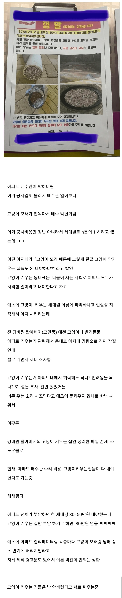

ㄷㄷㄷ

ㄷㄷㄷ
그럼 어따 버림?
변기에 슛
쓰레기를 종량제에 안버리는 미친놈들이 그렇게 많다고?
너 개드립애들이 자기는 재떨이통 들고다닌다 라는말하면 믿음?
믿지 들고다니는애들만 말을할테니까 안들고 다니는애들은 침묵하고 있을거야
나도 빈담배값에다가 꽁초모아서 버림 아이코스로 피는거라 태우는거는 아니지만 그자리에 다시 그대로 채워서 꽉채워서 버리면 기분이 좋음
좆냥이 키우는 새끼들 대부분이 정신병자새끼들인데
맞음
자기 집에서 키우는건 어쩔 수 없음
다만 배수관 비용은 막힌곳 라인확인해서 키우는 집 공동부담으로 넣어야지
그냥 변기에 뭘 버린다는 생각은 안하는게 정신건강에 좋지
녹는 고양이 모래 이딴 것도 비슷함. 어차피 화장실에는 못버리니 쓰레기통사서 버려라. 녹는 고양이 모래 이딴건 성능도 안좋으니 그냥 모래 사고 제발
지자체에 반려용품 신청할거라고
개냐 고양이냐 조사하고 다니면 됨ㅋㅋㅋ
상상도 못해봤네 ㄷㄷㄷㄷ
아니 변기에 왜버리지 애초에 모래만 담을수있는 탈취 쓰레기통이 따로나오는데 그런것도 안둬?
저걸 변기에 버린다는 생각이 존재하는구나 녹는재질도 아닌데
저걸시발 변기에 왜버림 미친년들
나도고양이키우지만 저걸 변기까지 들고가서 버릴생각하는게 대단하네
일반쓰레기로 버리는게 편한데..
변기막혀서 고생안해본년들이네
나는 종량제 봉투에 버린다 < 담배재떨이통 들고다닌다급임 절대 못믿음